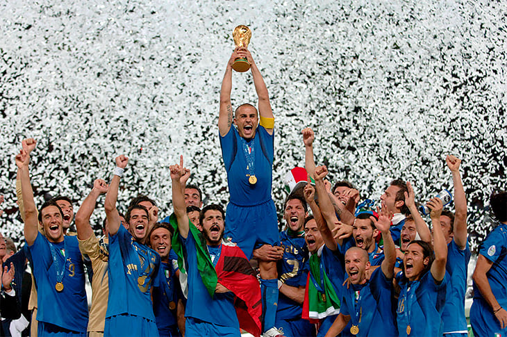

Футбол
Футбол (от англ. foot — ступня, ball — мяч) — самый популярный командный вид спорта в мире, целью в котором является забить мяч в ворота соперника большее число раз, чем это сделает команда соперника в установленное время. Мяч в ворота можно забивать ногами или любыми другими частями тела (кроме рук).
Точной даты возникновения футбола не известно, но можно с уверенностью сказать, что история футбола насчитывает не одно столетие и затронула немало стран. Игры с мячом были популярны на всех континентах, об этом говорят повсеместные находки археологов.
Есть 17 официальных правил игры, каждое из которых содержит список оговорок и руководящих принципов. Эти правила предназначены для применения на всех уровнях футбола, хотя есть некоторые изменения для таких групп, как юниоры, взрослые, женщины и люди с ограниченными физическими возможностями. Законы очень часто формулировались в общих чертах, которые позволяют упростить их применения в зависимости от характера игры. Правила игры публикуются в ФИФА, но поддерживаются Международным советом футбольных ассоциаций (IFAB)[36]. Каждая команда состоит максимум из одиннадцати игроков (без учёта запасных), один из которых должен быть вратарём. Правила неофициальных соревнований могут уменьшить количество игроков, максимум до 7. Вратари являются единственными игроками, которым позволено играть руками при условии: они делают это в пределах штрафной площади у своих собственных ворот. Хотя есть различные позиции на поле, эти позиции не обязательны